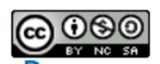
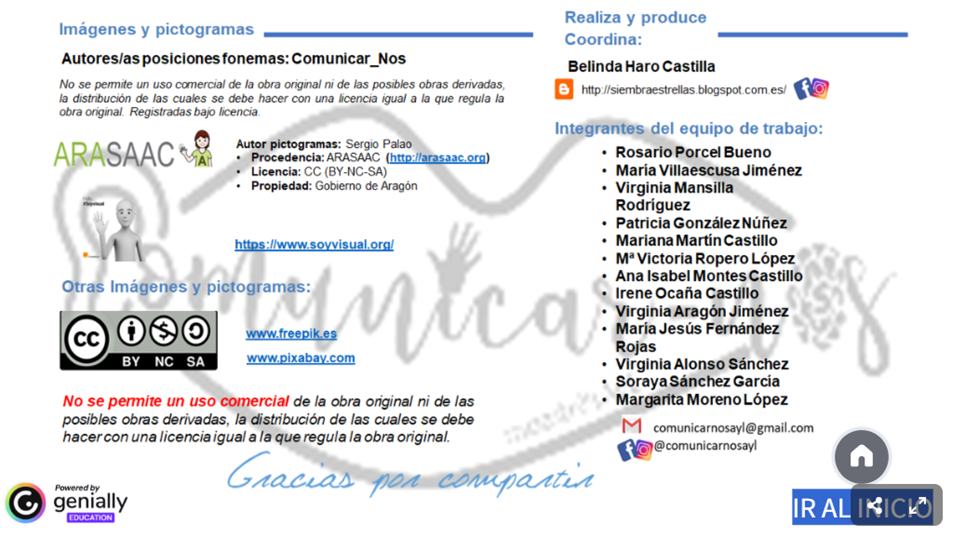

CRÉDITOS
CRÉDITOS DE RECURSOS EXTERNOS UTILIZADOS
CRÉDITOS:
Autor / Procedencia: Araceli López Ramírez
Descripción: Este material está creado para trabajar con primero de primaria y alumnado con NEE que presentan dificultades en el aprendizaje y de lenguaje las prendas de vestir. Está enmarcado dentro de la realización del Curso B2 de competencia Digital y en él se incluyen diferentes tipos de actividades para desarrollar esta situación de aprendizaje sobre la ropa.
Idioma: Castellano.
Este contenido ha sido creado con Exelearning, el editor libre y de fuente abierta para poder realizar el diseño de recursos digitales.
Licencia: Seguridad Digital by Araceli López Ramírez is licensed under CC BY-NC-ND 4.0.
CRÉDITOS DE RECURSOS EXTERNOS UTILIZADOS:
PÁGINA INICIAL : ¿QUÉ ME PONGO HOY?
La imagen inicial de las niñas cogiendo ropa del armario ha sido tomada de la página:
https://www.freepik.es/search?format=search&img=1&last_filter=img&last_value=1&query=Creative+commons.+NI%C3%91OS+QUE+SE+VISTEN&type=vector&item_id=1311425
PÁGINA A: CONOZCO Y USO MI ROPA
1.- LINEA TEMPORAL: DOMINIO PUBLICO
La línea temporal realizada con la aplicación www.tiki-toki.com para marcar la secuenciación del trabajo es de elaboración propia. (CC BY-NC-SA)
https://www.tiki-toki.com/timeline/entry/2240748/QU-ME-PONGO-HOY/
2.- PADLET CON ACTIVIDADES
Elaboración propia. Se encuentra en esta dirección:
Araceli López Ramírez •18dS.D.A: ¿É ME PONGO HOY?
Se plantean actividades para trabajar contenidos relacionados con las prendas de vestir.
https://padlet.com/alopram658/s-d-a-qu-me-pongo-hoy-iiu35hvr08kuverg
· 1: ¿QUÉ ROPA TENGO EN MI ARMARIO?
- Actividad 1: Canción:
Canal: English tree Español-Canciones Infantiles Y MÁS
Youtube: https://www.youtube.com/watch?v=8-Sq5U6NfMw (7 de mayo, 2021)
- Actividad 2: (Repite las palabras)
Canal: El desván de J. Autoría Sergio Palao. Gobierno de Aragón. LCC (BY-NC-SA) (20 de febrero de 2022)
Youtube: https://www.youtube.com/watch?v=yTyDUTwqDQw
- Actividad 3: separamos en sílabas dando palmadas
Canal: Daniel Alon.Videos educativos y entretenidos. (3 de agosto de 2014)
Youtube: https://www.youtube.com/watch?v=IAKP3XWwotU&t=4s
- Actividad 4: ¿qué palabra comienza por….?
Imagen tomada de ARASAAC creada por Almudena G. Pictogramas tomados de ARASAAC y creados por Sergio Palao. >Licencia CC (BY-NC).
- Actividad 5: viste al muñeco
Genially:
https://view.genially.com/5ecf8c3a33279a0d7f8c2ec1 .Ha sido creado por Logoprofeal el 28 de mayo de 2020.
- Actividad 6: blog de Rodrigo Arche
Blog creado por Rodrigo Arche Claudio. Creador del espacio ELE www.arche-ele.com desde junio de 2020. Licencia de Creative Commons Reconocimiento-No Comercial – CompartirIgual – 4.0. Internacional

· 2: ¿DÓNDE ME LA PONGO?
- Actividad 1: YO DESCRIBO Y TÚ DIBUJAS
Imagen tomada del Genially:
https://view.genially.com/5ecf8c3a33279a0d7f8c2ec1 .Ha sido creado por Logoprofeal el 28 de mayo de 2020.
- Actividad 2: dato de vocabulario” Actividad tomada del blog de Rodrigo Arche
Blog citado anteriormente.
- Actividad 3:
Ficha interactiva tomada de liveworksheets. Creada por: Mellany Granda.
Prendas de vestir - partes del cuerpo humano: https://www.liveworksheets.com/worksheet/es/identidad-y-autonomia/2077529
- Los pictogramas utilizados son propiedad del Gobierno de Aragón (CC BY-NC-SA). Están extraídos de la web: https://arasaac.org/pictograms/search
- Actividad 4:
Genially: https://view.genially.com/65d8787dde932a00144548ea
prendas de vestir
Irene MUÑOZ. Creado el 23 de febrero de 2024
- Actividad 5:
Gemially: https://view.genially.com/5e98d28e6326780e1df1f8e8
Nos vestimos
Creando en Especial. Creado el 16 de abril de 2020
- Actividad 6:
Canción: De esta forma nos vestimos.
Canal Super Simple Español. Canciones infantiles Y Más. (6 de abril de 2019)
Youtube: https://www.bing.com/videos/riverview/relatedvideo?q=VIDEOS%20PARA%20NI%C3%91OS%20SOBRE%20ROPA&mid=4F777B91592D8C9A39AD4F777B91592D8C9A39AD&ajaxhist=0
· 3: ¿QUÉ PUEDO PONERME HOY?
- Actividad 1: NOS VESTIMOS DIFERENTES
Canción tomada del canal Gaby ´s place. Creado el 27 de junio de 2021.
Titulado: PRENDAS DE VESTIR NIÑO/NIÑA FRIO/CALOR.
Youtube:
https://www.bing.com/videos/riverview/relatedvideo?q=genial%C3%B1y%20sobre%20prendas%20de%20vestir&mid=5BA81A101EEB44ECCAE95BA81A101EEB44ECCAE9&ajaxhist=0
- Actividad 2: VISTE AL CHICO Y A LA CHICA
Genially: https://view.genially.com/6502d05cbc15910013e6ab07
PRENDA ROPA
DAVINIA ESTUPIÑÁN. Creado el 14 de septiembre de 2023
- Actividad 3: ROPA CALOR / ROPA FRÍO
- Los pictogramas utilizados son propiedad del Gobierno de Aragón (CC BY-NC-SA). Están extraídos de la web: https://arasaac.org/pictograms/search
- Genially: https://view.genially.com/608c7eb1350f0b0d0a8eec07
LA ROPA DE LAS ESTACIONES
MARYBEL GAMERO. Creado el 30 de abril de 2021.
- ActividadES 4 y 5: CLASIFICA LA ROPA - DESCRIBE
Actividades tomadas del blog de Rodrigo Arche Blog citado anteriormente.
- Actividad 6:
Audio elaborado por mí utilizando AUDACITY:
https://drive.google.com/file/d/18J9fW3mrcvmQqauaG4j9ZGIK9_kb5ADH/view
· 4: ¡VAMOS DE COMPRAS!
- Actividad 1: ADIVINA
-Genially: https://siembraestrellas.blogspot.com/2021/02/material-interactivo-genially-ropa-y.html
Estas 3 actividades están tomadas del blog: siembraestrellas.blogspot.com :

- Actividad 2 : INVENTA TUS ADIVINANZAS
Este pdf es de elaboración propia. Los pictogramas utilizados son propiedad del Gobierno de Aragón (CC BY-NC-SA). Están extraídos de la web: https://arasaac.org/pictograms/search
- Actividad 3 : VAMOS DE COMPRAS
Actividad tomada del blog de Rodrigo Arche Blog citado anteriormente.
· 5: ¡ME GUSTAN ESTOS ZAPATOS!
- Actividad 1 : ORDENA LA HISTORIA
Historieta elaborada por mí con la herramienta pixtón en esta dirección web: www.pixton.com
https://drive.google.com/file/d/1_EYy4AXPumIG6N4k3Stm--kdpQwUcM9-/view?usp=sharing
- Actividad 2 : ¿QUIÉN ES QUIÉN?
Tomado de Pintarest:
https://i.pinimg.com/1200x/51/2f/8c/512f8c3ea1a5f76ada1f052371b90477.jpg
Quién es quién by Clara Sánchez Marcos | Publish with Glogster!
See the Glog! Glog: text, images, music, video | Glogster
- Actividad 3: PASAPALABRA
Actividad tomada de la página: https://es.educaplay.com/
https://es.educaplay.com/recursos-educativos/12423651-pasapalabra_ropa.html
Creada por: Cristina Ascaso
· 7: REGLAS PARA MOVERNOS POR INTERNET
CANVA de elaboración propia. Se puede encontrar en esta dirección:
https://www.canva.com/design/DAHFE6TCwgc/se6wflOzLP5NnBGPd4Ej6Q/edit
PÁGINA C. GUÍA DIDÁCTICA:
1.Tabla de creación propia para asociar tareas a criterios de evaluación.
https://drive.google.com/file/d/1WG5raciyKHy0LVdn7HUcQWg-TaMKqrmR/view
2. Acceso directo a la herramienta SYMBALOO creada por mí para acceder a mis direcciones webs más frecuentadas a diario.
https://www.symbaloo.com/shared/AAAABngTkSwAA42ADtFZpw==
NODO FINAL DE CRÉDITOS
| Título | ¿QUÉ ME PONGO HOY? |
|---|---|
| Descripción | A través de esta Unidad se pretende que el alumnado avance especialmente en su capacidad de comprensión y expresión oral, adquiriendo vocabulario y estructuras morfosintácticas básicas relacionadas con la temática de la misma. |
| Autoría | ARACELI LÓPEZ RAMÍREZ |
| Licencia | creative commons: attribution - share alike 4.0 |
Este contenido fue creado con eXeLearning, el editor libre y de fuente abierta diseñado para crear recursos educativos.